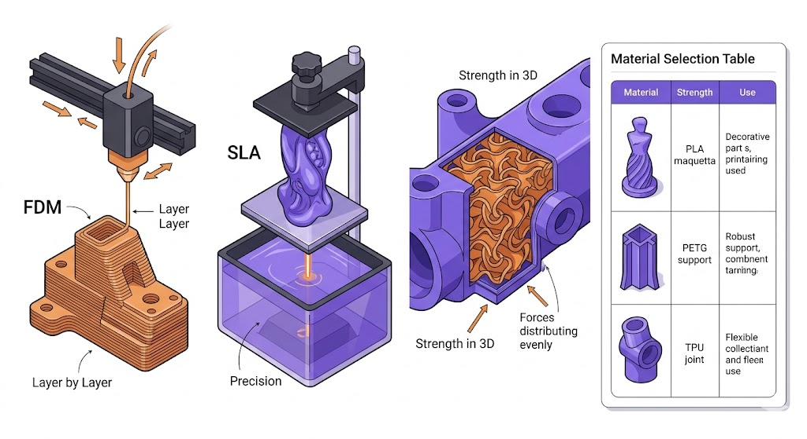

Vous avez une idée, un fichier ou un besoin technique ? Le succès d'une impression 3D repose sur deux piliers fondamentaux : la manière dont l'objet est fabriqué (la technologie) et ce dont il est fait (le matériau).
Le choix de la technologie influence non seulement l'aspect visuel de votre pièce, mais aussi ses propriétés mécaniques et son coût de production. Il est donc essentiel de comprendre les forces de chaque méthode.
I. Les Technologies : Comment l'objet prend-il vie ?
Il existe plusieurs façons de construire un objet en 3D. Voici les trois méthodes principales que nous utilisons pour répondre à vos besoins spécifiques :
- Le FDM (Dépôt de fil fondu) : La méthode la plus polyvalente. Un fil de plastique est fondu et déposé couche par couche. C'est idéal pour les pièces solides et économiques.
- Le SLA (Résine UV) : La haute précision. Un laser solidifie une résine liquide, offrant un rendu lisse comme du verre, parfait pour les détails minutieux.
- Le SLS (Frittage Laser) : La performance industrielle. Utilise de la poudre de nylon fusionnée par laser pour des pièces ultra-résistantes sans besoin de supports.
II. Les Matériaux : Quelle armure pour votre pièce ?
Le choix du matériau dépend directement de l'environnement final de l'objet (exposition à la chaleur, chocs ou rayons UV).
| Matériau | Points Forts | Usage idéal |
|---|---|---|
| PLA | Esthétique & Écologique | Décoration, Maquettes |
| PETG | Robuste & Imperméable | Usage extérieur, Supports |
| ABS / ASA | Résistance Chaleur (90°C+) | Automobile, Industrie |
| TPU | Flexible & Élastique | Joints, Coques |
Le conseil de Theina3D
Il n'y a pas de "meilleur" matériau universel. Un projet en PLA pour une voiture finira par déformer sous la chaleur, tout comme une résine standard pourra être trop fragile pour un engrenage. Nous sommes là pour vous conseiller le duo gagnant.
Un projet en tête ?
Contactez-nous pour une analyse technique de votre cahier des charges.
Obtenir un devis